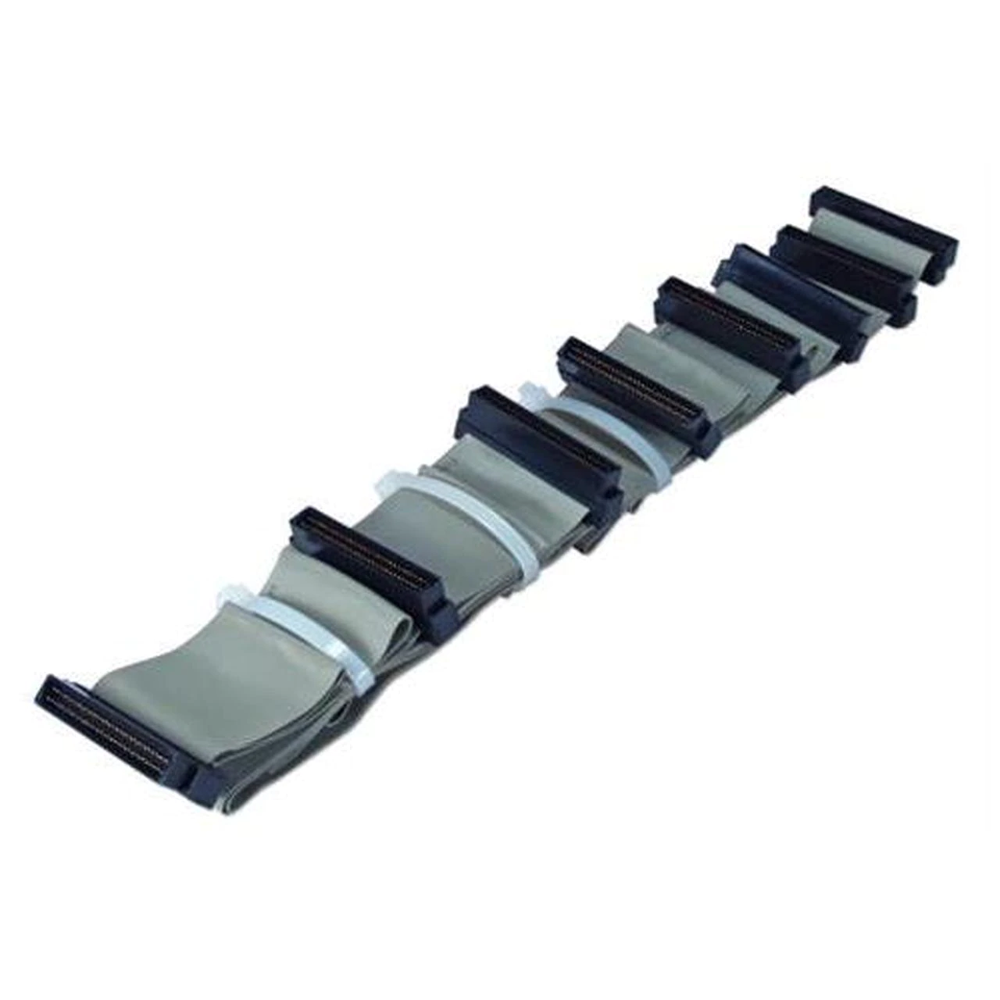
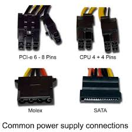
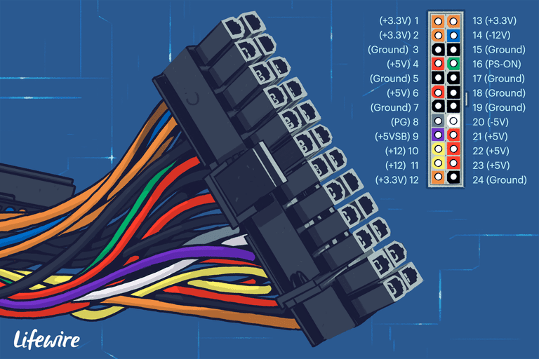
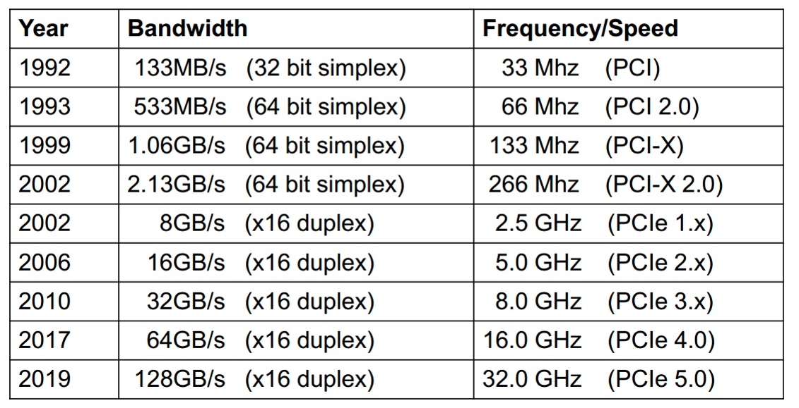
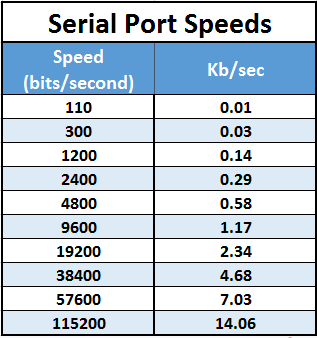
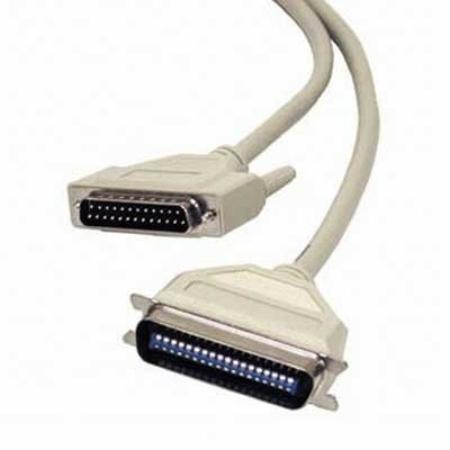
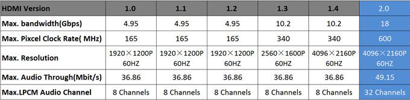

Conexiones

Conexiones
Son los mecanismos Físicos que se utilizan para conectar los distintos tipos de hardware dentro y fuera de la PC.Conexiones - Internas
- Dispositivos de Almacenamiento
- Alimentación
- Conectores placa madre
- Otras
Conexiones - Internas
Dispositivos de Almacenamiento
IDE-PATA
Son los utilizados anteriormente para consumo

Conexiones - Internas
Dispositivos de Almacenamiento
IDE-PATA
| Modo | Velocidad | Modo | Velocidad |
|---|---|---|---|
| ATA-1 | 8Mb/s | ATA-5 | 66Mb/s |
| ATA-2 | 8Mb/s en bloques | ATA-6 | 100Mb/s |
| ATA-3 | 16Mb/s | ATA-7 | 133Mb/s |
| ATA-4 | 33Mb/s | ATA-8 | 166Mb/s |
Conexiones - Internas
Dispositivos de Almacenamiento
SATA
Son los utilizados actualmente para consumo

Conexiones - Internas
Dispositivos de Almacenamiento
IDE-SATA
| Modo | Velocidad |
|---|---|
| SATA-1 | 150MB/s |
| SATA-2 | 300MB/s |
| SATA-3 | 600MB/s |
Conexiones - Internas
Dispositivos de Almacenamiento
SCSI
Son los utilizados anteriormente para servidores
Conexiones - Internas
Dispositivos de Almacenamiento
IDE-SCSI
| Modo | Velocidad |
|---|---|
| SCSI-1 | 5MB/s |
| SCSI-2 | 10MB/s - 20MB/s |
| SCSI-3 | 20Mb/s - 320MB/s |
Conexiones - Internas
Dispositivos de Almacenamiento
SAS
Son los utilizados actualmente para servidores

Conexiones - Internas
Dispositivos de Almacenamiento
IDE-SAS
| Modo | Velocidad |
|---|---|
| SAS 2008 | 3Gb/s ~(350MB/s) |
| SAS 2018 | 24Gb/s ~(3GB/s) |
Conexiones - Internas
Dispositivos de Alimentación
Conexiones - Internas
Dispositivos de Alimentación
Conexiones - Internas
Conectores a placa madre

Conexiones - Internas
Conectores a placa madre

Conexiones - Internas
Conectores a placa madre
Conexiones - Externas
- Serie - Paralelo
- USB
- Video
- Otras
Conexiones - Externas
Puerto Serie
Anteriormente muy usada, actualmente remplazada por USB

Conexiones - Externas
Puerto Serie
Conexiones - Externas
Puerto Paralelo
Anteriormente usado para impresoras y escaners, actualmente remplazada por USB
Conexiones - Externas
Puerto Paralelo

Conexiones - Externas
Puerto USB - Universal Serial Bus
Remplaza al serie y paralelo, provee alta velocidad y confiabilidad y la posibilidad de agregar muchos dispositivos.

Conexiones - Externas
Puerto USB - Universal Serial Bus
- USB 1.0 1.6Mb/s
- USB 1.1 12Mb/s
- USB 2.0 480Mb/s
- USB 3.0 4.8Gb/s
- USB 3.1 10Gb/s
Conexiones - Externas
Conector USB C
- USB 3.1 10Gb/s
- Hasta 90W de alimentación
- Thunderbolt 3
- Modo Alternativo
- Display Port 1.3
- Display MHL 3.0
- PCI Express
- Ethernet
Conexiones - Externas
Conector USB C

Conexiones - Externas
Conector USB 3.2
- 20Gb/s
Conexiones - Externas
Video
- VGA
- DVI
- DisplayPort
- HDMI
Conexiones - Externas
Video Graphics Array (VGA)
Utiliza señales analógicas para visualizar video

Conexiones - Externas
Digital Visual Interface (DVI)
Utiliza señales analógicas (compatibles con VGA) y digitales para visualizar video
Señales de hasta 3840 × 2400 30Hz

Conexiones - Externas
HDMI (High-Definition Multimedia Interface)
Salida digital de video

HDMI (High-Definition Multimedia Interface)

HDMI (High-Definition Multimedia Interface)
Conexiones - Externas
Ethernet
Cableado para interconectar computadoras en una red local

Conexiones - Externas
Ethernet

Conexiones - Externas
Ethernet